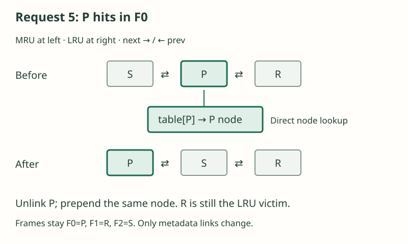
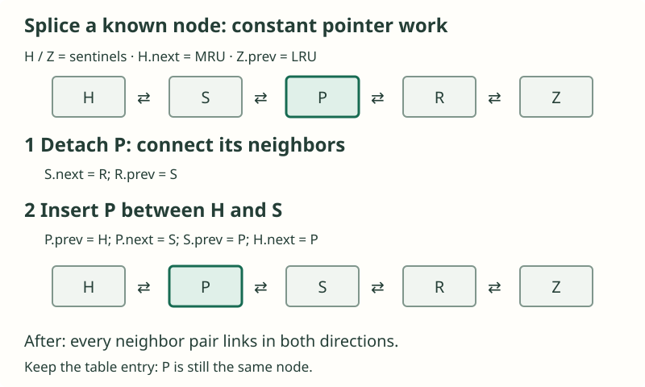

Cache가 가득 찼는데 T가 필요하다. 무엇을 내보낼까?
빠른 저장 공간의 세 칸에 P, R, S가 들어 있습니다. T를 가져오려면 하나가 자리를 내줘야 합니다. 내보낸 page를 다시 요청하면 그 선택의 비용을 치르게 됩니다.
교체 전 · T는 없음
교체 후 · F0에 T
아래 요청열의 요청 7을 FIFO로 처리한 모습입니다. F0에 T를 적재해도 P는 backing store에 남아 있습니다.
이 예제는 고정 용량, 같은 크기의 page, 순차 요청, 유효한 backing copy를 가정합니다. 모든 resident page는 즉시 교체할 수 있고, miss마다 page를 적재하며 용량 확장과 cache 우회는 하지 않습니다.
Page는 데이터, frame은 재사용하는 자리
Page는 이름으로 식별하는 고정 크기의 데이터 블록입니다. Frame은 page 하나를 담는 재사용 가능한 칸입니다. Page P가 frame F0에서 나가도 F0는 남아 T를 담을 수 있습니다. 요청한 page가 cache 안에 있으면 hit, 없으면 miss입니다. 이 모델에서는 miss가 나면 backing store에서 page를 가져옵니다.
Temporal locality는 같은 데이터를 곧 다시 사용하는 성질입니다. Spatial locality는 인접한 데이터를 사용하는 성질입니다. 블록을 가져오면 이후의 인접 데이터 요청도 처리할 수 있습니다. 예제에서는 P와 R을 반복해서 쓰는 중에 서로 다른 S, T, U를 scan합니다. P/R은 이 구간에서 반복해서 필요한 page의 집합, 즉 작은 working set을 이룹니다. 재사용은 workload의 성질이며, 어떤 policy가 P와 R을 반드시 지킨다는 뜻은 아닙니다.
Cache 계층과 가상의 비용 예제
Cache는 데이터의 일부를 더 빠르게 접근할 수 있는 저장 공간에 보관합니다. Register, CPU cache, main memory, persistent storage는 용량과 접근 비용이 다른 계층을 이룹니다. 실제 비용은 장비에 따라 다릅니다. 여기서는 빠른 cache 하나와 더 느린 backing store만 떼어 생각합니다.
가상의 순차 처리 비용으로 lookup에 1, miss에 추가 100이 든다고 합시다. 요청 10개 중 miss가 3개면 비용은 10 × 1 + 3 × 100 = 310입니다. Hit 수만으로는 policy metadata 관리, I/O 중첩, 경합 비용을 알 수 없습니다. 이 단위는 장비 측정값이 아닙니다.
직접 만든 요청열 하나를 네 번 새로 실행하기
P/R 반복 · 첫 scan page S
- 01P반복 집합
- 02R반복 집합
- 03P반복 집합
- 04Sscan
- 05P반복 집합
- 06R반복 집합
Scan 계속
- 07Tscan
- 08Uscan
P/R로 복귀
- 09P반복 집합
- 10R반복 집합
숫자는 요청 순번입니다. P/R은 반복해서 쓰는 working set이고 S/T/U는 서로 다른 scan page입니다. 각 policy는 빈 cache에서 시작하여 열 요청을 모두 처리합니다.
각 실행은 빈 cache에서 시작합니다. P/R은 반복해서 쓰고 S/T/U는 scan으로 들어옵니다. Frame의 자리는 고정되어 있습니다.
Trace 표기 규칙
각 policy는 빈 cache에서 같은 요청 10개를 처리합니다. P/R은 반복해서 쓰고, S/T/U는 scan으로 들어옵니다.
F0, F1, F2는 고정된 물리적 칸입니다. 처음에는 모두 비어 있습니다(—). 번호가 가장 작은 빈 frame부터 채우고, 교체할 때는 victim의 frame에 적재합니다. 각 행은 요청을 처리한 직후 상태입니다. H = hit, M = miss이며 victim —는 퇴출이 없다는 뜻입니다. 최초 적재를 포함한 요청 10개 모두를 합계에 넣습니다. Queue 순서는 metadata이며 page 바이트의 물리적 이동이 아닙니다.
직접 구성한 교육용 모델이며 CUBRID 설정이나 Runtime observation이 아닙니다. 같은 크기의 page, 순차 요청, 동일한 miss 비용, 제한 없는 victim 자격을 가정하여 policy 선택을 database 안전 조건과 분리합니다.
요청 7: 빈 frame이 없다
P R P S P R을 처리하면 frame에는 P / R / S가 있습니다. 다음 요청 T는 없으므로 miss입니다. 무엇을 내보낼까요? FIFO는 들어온 순서를, LRU는 접근 순서를 기억합니다.
용량이 고정되어 있으면 기다리는 것만으로 공간이 생기지 않습니다. 퇴출하거나, 우회·거절 등 허용된 다른 처리가 필요합니다. 이 예제에서는 T를 반드시 적재합니다.
FIFO: 들어온 순서를 기억하고 hit는 무시하기
FIFO는 가장 먼저 적재된 resident page를 내보냅니다. Queue는 오래된 것 → 새것 순서이며 hit로 바뀌지 않습니다. 처음에는 빈 queue이고, 순차 적재이므로 동률이 없습니다. 요청 7에서 T를 넣으려면 이미 사용 중인 frame 하나가 필요합니다.
요청 7에서 FIFO는 P를 내보냅니다. Hit가 나도 들어온 순서는 바뀌지 않았기 때문입니다.
전체 trace와 상세 해설
| 요청 | H/M | Victim | F0 / F1 / F2 | Metadata |
|---|---|---|---|---|
| 1 P | M | — | P / — / — | P |
| 2 R | M | — | P / R / — | P → R |
| 3 P | H | — | P / R / — | P → R |
| 4 S | M | — | P / R / S | P → R → S |
| 5 P | H | — | P / R / S | P → R → S |
| 6 R | H | — | P / R / S | P → R → S |
| 7 T | M | P | T / R / S | R → S → T |
| 8 U | M | R | T / U / S | S → T → U |
| 9 P | M | S | T / U / P | T → U → P |
| 10 R | M | T | R / U / P | U → P → R |
요청 5에서 P를 사용했어도 요청 7에서 가장 먼저 들어온 page는 여전히 P입니다. Victim은 S가 아니라 P입니다. 요청 7–10은 모두 miss입니다. FIFO의 합계는 hit 3개, miss 7개입니다. 마지막 queue는 U → P → R이고 물리적 frame은 R / U / P입니다.
Exact LRU: 모든 접근의 순서를 기억하기
LRU는 hit를 포함한 모든 접근을 기억합니다. 요청 3에서 P는 F0에 그대로 있지만 가장 최근에 쓴 page가 됩니다.
요청 3 · F0의 P가 hit합니다. Frame은 P / R / — 그대로입니다.
FIFO
먼저 적재 → 나중 적재
Hit는 적재 순서를 바꾸지 않습니다.
LRU
오래전 접근 → 최근 접근
P가 가장 최근이 됩니다. Page 바이트는 F0에 그대로 있습니다.
화살표는 metadata 순서이며 page 이동이 아닙니다.
요청 7에서 LRU는 S를 내보냅니다. 요청 8에서는 P를 내보냅니다. 과거를 기억해도 미래를 알 수는 없습니다.
전체 trace와 상세 해설
| 요청 | H/M | Victim | F0 / F1 / F2 | Metadata |
|---|---|---|---|---|
| 1 P | M | — | P / — / — | P |
| 2 R | M | — | P / R / — | P → R |
| 3 P | H | — | P / R / — | R → P |
| 4 S | M | — | P / R / S | R → P → S |
| 5 P | H | — | P / R / S | R → S → P |
| 6 R | H | — | P / R / S | S → P → R |
| 7 T | M | S | P / R / T | P → R → T |
| 8 U | M | P | U / R / T | R → T → U |
| 9 P | M | R | U / P / T | T → U → P |
| 10 R | M | T | U / P / R | U → P → R |
요청 3은 P → R을 R → P로 바꿉니다. 요청 6 직후 가장 오래전에 사용한 것은 S이므로 요청 7은 S를 내보냅니다. 요청 8에서 P가 나가고, 이후 P/R 복귀가 각각 R과 T를 내보냅니다. 합계는 hit 3개, miss 7개로 FIFO와 같지만 victim과 최종 frame은 다릅니다. Map과 doubly linked list를 쓰면 접근 갱신을 상수 시간에 처리할 수 있어도, 모든 접근마다 정확한 순서를 관리해야 합니다. 여러 실행 주체가 metadata를 공유하면 동기화도 필요합니다. 상수 시간은 비용이 없다는 뜻이 아닙니다.
Exact LRU 구현: node를 찾고 맨 앞으로 옮기기
중간에 있는 항목에 hit가 났을 때 순서를 어떻게 적은 비용으로 바꿀까요? Key에서 node를 찾는 hash table과 같은 node들을 잇는 doubly linked list를 함께 사용합니다. Hash table로 list를 순회하지 않고 node를 찾고, prev와 next로 앞 node를 따로 찾지 않고 연결을 끊습니다.
Timestamp나 범용 정렬은 필요하지 않습니다. 접근한 항목 하나만 최신으로 바꾸고 나머지 항목의 상대 순서는 그대로 두면 됩니다. 여기서는 head가 가장 최근에 사용한 MRU, tail이 가장 오래전에 사용한 LRU입니다. 앞의 trace가 오래된 순서에서 최신 순서로 나열한 것과 방향만 반대입니다.

요청 6에서 R에 hit가 나면 순서는 R ⇄ P ⇄ S입니다. 요청 7에서 T가 miss이면 tail의 S를 떼고 table[S]를 지웁니다. F2를 T에 재사용하고 T를 head에 넣은 뒤 table[T]가 그 node를 가리키게 합니다. 결과는 T ⇄ R ⇄ P입니다. 위치를 아는 node를 떼는 데 필요한 pointer 쓰기 횟수는 list 길이와 무관합니다.
Hash table은 “이 항목은 어디에 있는가?”에 답하고, list는 “어떤 항목을 가장 오래전에 사용했는가?”에 답합니다. 함께 사용하면 조회·recency 갱신·교체를 기대 O(1)에 처리하며, resident 항목 n개에 대한 metadata는 O(n)입니다.
Pointer를 실제로 어떻게 연결할까?
경계에 sentinel이라는 더미 node H와 Z를 둡니다. 빈 list는 H ⇄ Z입니다. 맨 앞이나 뒤의 실제 node에도 이웃이 둘 있으므로 head·tail·중간을 같은 unlink 함수로 처리합니다. H와 Z는 cache 항목도 victim도 아닙니다.

Pseudocode: 조회, 갱신, 삽입, 교체
단일 thread의 교육용 cache이며 capacity는 0 이상이고 할당과 적재는 성공한다고 가정합니다. Miss이면 MISS를 반환하고 호출자가 값을 적재한 뒤 put을 호출합니다. 새 항목 삽입과 기존 key의 값 갱신 모두 접근으로 셉니다. Page cache에서는 value가 frame 참조일 수 있으며, 연결을 바꾼다고 page를 복사하지 않습니다.
# H and Z are dummy nodes; initially H.next = Z, Z.prev = H.
# H.next is MRU; Z.prev is LRU. Each real node has key/value/prev/next.
unlink(n):
n.prev.next = n.next
n.next.prev = n.prev
push_front(n):
n.prev = H
n.next = H.next
H.next.prev = n
H.next = n
touch(n):
unlink(n)
push_front(n)
get(key):
n = table.find(key)
if n is missing: return MISS
touch(n)
return n.value
put(key, value):
if capacity == 0: return
n = table.find(key)
if n exists:
n.value = value
touch(n)
return
if table.size == capacity:
victim = Z.prev
unlink(victim)
table.erase(victim.key)
n = Node(key, value)
push_front(n)
table[key] = n각 연산이 끝나면 resident key마다 table 항목 하나와 실제 list node 하나가 있어야 합니다. 두 개수는 같고 capacity를 넘지 않습니다. 모든 실제 node n에 대해 n.prev.next == n과 n.next.prev == n이 성립합니다. 명시적 삭제는 table 조회, unlink, table 삭제 순서입니다. 항목이 하나여도 양쪽에 sentinel이 있어 같은 코드로 처리하고, capacity가 0이면 아무것도 저장하지 않습니다. 실제 구현에서는 할당·적재 실패와 node 수명도 처리해야 합니다.
생각해 보기: singly linked list로 하면 무엇이 어려울까?
P의 주소만 알아서는 앞 node를 알 수 없습니다. Next 연결만 있으면 보통 head부터 순회해 P를 가리키는 node를 찾아야 P를 뗄 수 있습니다. Prev 연결이 그 정보를 바로 제공합니다. Hash table 없이 list만 쓰면 key로 node를 찾는 순회가 여전히 필요합니다.
Priority queue나 BST로 exact LRU를 구현할 수 있을까?
가능합니다. 접근마다 중복 없이 증가하는 sequence number를 부여하고 가장 작은 값을 victim으로 고릅니다. Hit마다 정렬 key를 갱신해야 합니다. Timestamp 값만 바꾸고 자료구조의 순서를 복구하지 않으면 정렬 조건이 깨집니다. 실제 시계는 동률 처리가 필요하고, 크기가 유한한 counter는 wraparound 방안이 필요합니다.
| 자료구조 | Hit 갱신 / 교체 | 중간 항목을 어떻게 갱신하는가? |
|---|---|---|
| Hash table + doubly linked list | 기대 O(1) / 기대 O(1) | Key → node; 연결을 끊고 MRU로 이동 |
| Indexed min-heap | O(log n) / O(log n) | Key → 배열 위치; heap 복구 중 swap할 때마다 위치 갱신 |
| Balanced BST + key 조회 | O(log n) / O(log n) | 기존 sequence key를 찾아 삭제한 뒤 새 sequence로 재삽입 |
| Last-access counter + scan | 기대 O(1) / O(n) | Hit이면 counter를 덮어쓰고, 교체할 때 전체를 순회해 최솟값 선택 |
일반 heap은 임의의 key를 빠르게 찾는 기능이 없어서 검색에 O(n)이 걸릴 수 있습니다. Indexed heap은 위치 정보를 추가하여 이 문제를 해결합니다. Hit마다 새 heap record를 넣고 나중에 오래된 record를 버리는 방법도 있지만, 회수하지 않으면 오래된 record가 쌓이므로 메모리와 교체 지연의 한도를 따로 관리해야 합니다. Balanced BST도 가능하지만 exact LRU에 필요한 순서 변경은 “가장 최신으로 이동”뿐이므로 범용 정렬 기능까지 필요하지는 않습니다.
Exact는 기록한 과거의 정확성이지 예측의 우수성을 뜻하지 않습니다. 여러 thread가 전역 LRU를 공유하면 조회·연결 변경·교체를 동기화해 일관된 접근 순서를 만들어야 합니다. 교육용 구현에서는 하나의 lock으로 보호할 수 있습니다. 연산량이 O(1)이어도 경합할 수 있습니다. Clock은 이런 전체 순서를 유지하지 않습니다. Database에서는 pinning과 dirty page의 안전 조건도 필요하므로 tail을 곧바로 재사용하지 못할 수 있습니다. 다음 database bridge에서 그 제약을 추가합니다. 여기서는 추상적인 exact LRU를 구현하며, CUBRID의 교체 policy를 설명하는 것은 아닙니다.
같은 요청, 서로 다른 기억.
독립된 두 실행이며 frame 위치는 고정입니다. 테두리는 내용 변경을 강조합니다. Metadata는 변경 전 ⇒ 후입니다.
시작 · 빈 frame
처음에는 두 policy 모두 frame 세 개가 비어 있습니다.
FIFO
먼저 들어온 순서 → 나중
아직 요청 없음
LRU
오래전 접근 → 최근 접근
아직 요청 없음
요청 1 · P
P는 miss입니다. 첫 빈 frame인 F0에 적재합니다.
FIFO
먼저 들어온 순서 → 나중
M · 내보낸 page: —
LRU
오래전 접근 → 최근 접근
M · 내보낸 page: —
요청 2 · R
R은 miss입니다. F1에 적재합니다. P가 먼저 들어왔고 먼저 접근되었습니다.
FIFO
먼저 들어온 순서 → 나중
M · 내보낸 page: —
LRU
오래전 접근 → 최근 접근
M · 내보낸 page: —
요청 3 · P
P는 hit입니다. FIFO 순서는 그대로지만 LRU는 P를 가장 최근 위치로 옮깁니다. Page 바이트는 이동하지 않습니다.
FIFO
먼저 들어온 순서 → 나중
H · 내보낸 page: —
LRU
오래전 접근 → 최근 접근
H · 내보낸 page: —
요청 4 · S
S는 miss입니다. F2를 채우면 세 frame이 모두 찹니다.
FIFO
먼저 들어온 순서 → 나중
M · 내보낸 page: —
LRU
오래전 접근 → 최근 접근
M · 내보낸 page: —
요청 5 · P
P가 다시 hit합니다. LRU만 순서를 갱신합니다.
FIFO
먼저 들어온 순서 → 나중
H · 내보낸 page: —
LRU
오래전 접근 → 최근 접근
H · 내보낸 page: —
요청 6 · R
R이 hit합니다. LRU에서는 S가 가장 오래전에 쓰였지만, FIFO에서는 P가 여전히 가장 먼저 들어온 page입니다.
FIFO
먼저 들어온 순서 → 나중
H · 내보낸 page: —
LRU
오래전 접근 → 최근 접근
H · 내보낸 page: —
요청 7 · T
T는 miss입니다. FIFO는 P를, LRU는 S를 내보냅니다. 같은 요청에 다른 선택을 합니다.
FIFO
먼저 들어온 순서 → 나중
M · 내보낸 page: P
LRU
오래전 접근 → 최근 접근
M · 내보낸 page: S
요청 8 · U
U는 miss입니다. 이제 LRU도 P를 내보냅니다. 최근에 쓰였다고 계속 보호되는 것은 아닙니다.
FIFO
먼저 들어온 순서 → 나중
M · 내보낸 page: R
LRU
오래전 접근 → 최근 접근
M · 내보낸 page: P
요청 9 · P
P가 돌아옵니다. 두 policy 모두 P를 내보냈으므로 miss입니다.
FIFO
먼저 들어온 순서 → 나중
M · 내보낸 page: S
LRU
오래전 접근 → 최근 접근
M · 내보낸 page: R
요청 10 · R
R이 돌아와도 둘 다 miss입니다. Victim은 달랐지만 합계는 둘 다 hit 3회, miss 7회입니다.
FIFO
먼저 들어온 순서 → 나중
M · 내보낸 page: T
LRU
오래전 접근 → 최근 접근
M · 내보낸 page: T
Clock: 정확한 순서 대신 bit 하나
Frame은 F0 → F1 → F2 → F0의 원을 이룹니다. 처음 hand는 F0, bit는 000입니다. Hit는 해당 frame의 bit를 1로 만들며 hand를 움직이지 않습니다. 빈 frame에 적재하면 bit를 1로 만들고 hand를 그다음 frame으로 옮깁니다.
Cache가 찬 상태에서 miss가 나면 hand가 가리키는 frame을 확인합니다. Bit가 1이면 0으로 지우고 전진합니다. 0이면 교체·적재하고 bit를 1로 만든 뒤 한 칸 전진합니다. Metadata는 F0/F1/F2 순서의 bit와 다음 hand입니다. 111; F0에서 요청 7을 예측해 보세요. 어떤 bit가 지워질까요?
Bit가 1이면 이번 검사를 넘길 뿐, 계속 보호되는 것은 아닙니다. Bit를 지우고 전진하다가 처음 만나는 0에서 교체합니다.
Clock: reference bit와 hand로 근사하기
요청 7: T가 없어서 miss입니다. Bit 111, hand F0에서 시작해 한 칸씩 확인합니다.
1 / 5 · F0 검사 전
111 · Hand → F0
T가 없어 miss입니다. Hand는 F0에서 시작하고 reference bit는 모두 1입니다.
2 / 5 · F0를 지우고 F1으로 이동
011 · Hand → F1
P의 bit가 1이므로 0으로 지우고 이동합니다. 아직 내보낸 page는 없습니다.
3 / 5 · F1을 지우고 F2로 이동
001 · Hand → F2
R의 bit도 1입니다. 지우고 계속 이동합니다. P/R/S는 그대로 resident입니다.
4 / 5 · F2를 지우고 F0로 복귀
000 · Hand → F0
S의 bit를 지웁니다. 한 바퀴를 돌았고, 이제 F0의 bit는 0입니다.
5 / 5 · P 대신 T를 적재하고 F1으로 이동
100 · Hand → F1
F0의 bit가 0이므로 P를 내보내고 T를 적재한 뒤 bit를 1로 설정합니다. 요청 7이 끝났습니다.
F0 → F1 → F2 → F0. Bit 표기는 F0/F1/F2 순서입니다. 모든 검사는 요청 7 하나에 속합니다.
전체 trace와 상세 해설
| 요청 | H/M | Victim | F0 / F1 / F2 | Metadata |
|---|---|---|---|---|
| 1 P | M | — | P / — / — | 100; F1 |
| 2 R | M | — | P / R / — | 110; F2 |
| 3 P | H | — | P / R / — | 110; F2 |
| 4 S | M | — | P / R / S | 111; F0 |
| 5 P | H | — | P / R / S | 111; F0 |
| 6 R | H | — | P / R / S | 111; F0 |
| 7 T | M | P | T / R / S | 100; F1 |
| 8 U | M | R | T / U / S | 110; F2 |
| 9 P | M | S | T / U / P | 111; F0 |
| 10 R | M | T | R / U / P | 100; F1 |
요청 7은 세 frame의 1 bit를 모두 지운 뒤 F0로 돌아와 P를 T로 바꿉니다. 결과는 100; F1입니다. 요청 8과 9는 bit가 0인 F1과 F2를 교체합니다. 요청 10은 다시 세 개의 1 bit를 지우고 F0를 교체합니다. 합계는 hit 3개, miss 7개입니다. 이 실행은 FIFO와 같지만 항상 같은 policy는 아닙니다. Bit가 0인 page에 hit가 나면 한 번 더 기회를 줄 수 있습니다. Bit 하나는 마지막으로 지운 이후 사용 여부를 기억할 뿐 정확한 접근 순서를 기록하지 않습니다. Clock은 recency를 근사하며, 한 번의 miss에서 여러 frame을 검사할 수 있습니다.
OPT / MIN: 미래의 요청을 확인하기
OPT는 알려진 미래에서 다음 사용이 가장 먼 page를 내보냅니다. 여기서는 P와 R을 둘 다 지킬 수 있습니다.
P → 9
R → 10
S → ∞
P → 9
R → 10
T → ∞
숫자는 다음 요청 번호이고, ∞는 이후에 다시 쓰지 않는다는 뜻입니다.
요청 7에서 OPT는 S를, 요청 8에서 T를 내보냅니다. P와 R이 돌아올 것을 알기 때문에 둘 다 남깁니다.
전체 trace와 상세 해설
Cache가 찬 상태에서 miss가 나면 OPT는 다음 사용 시점이 가장 먼 page를 내보냅니다. 다시 쓰이지 않는 page의 다음 사용은 ∞로 표시하고, 동률이면 frame 번호가 가장 작은 것을 고릅니다. 아래 metadata는 각 frame을 해당 행 이후에 다시 요청하는 번호입니다. 온라인 counter가 아니라 미래를 알고 적은 값입니다. 요청 7과 8에서 무엇을 내보내야 P/R 복귀에 영향이 없을까요?
| 요청 | H/M | Victim | F0 / F1 / F2 | Metadata |
|---|---|---|---|---|
| 1 P | M | — | P / — / — | 3 / — / — |
| 2 R | M | — | P / R / — | 3 / 6 / — |
| 3 P | H | — | P / R / — | 5 / 6 / — |
| 4 S | M | — | P / R / S | 5 / 6 / ∞ |
| 5 P | H | — | P / R / S | 9 / 6 / ∞ |
| 6 R | H | — | P / R / S | 9 / 10 / ∞ |
| 7 T | M | S | P / R / T | 9 / 10 / ∞ |
| 8 U | M | T | P / R / U | 9 / 10 / ∞ |
| 9 P | H | — | P / R / U | ∞ / 10 / ∞ |
| 10 R | H | — | P / R / U | ∞ / ∞ / ∞ |
요청 7 시점에 P/R은 각각 9/10에서 다시 쓰이고 S는 돌아오지 않으므로 S를 내보냅니다. 요청 8에서는 앞으로 쓰이지 않는 T를 내보냅니다. P/R을 지켜 hit 5개, miss 5개가 됩니다. 빈 cache에서 서로 다른 page 다섯 개를 요청하므로 최소 다섯 번의 miss가 필요하며 이 실행은 그 하한에 도달합니다. OPT는 이 가정 아래의 offline 비교 기준입니다. 실제 시스템은 일반적으로 미래 요청 전체를 알 수 없습니다.
Workload를 안다고 미래를 모두 아는 것은 아니다
정확한 요청열을 안다 → OPT 계산. 미래의 정확한 page 요청열을 알면 이 모델에서 OPT로 miss를 최소화할 수 있습니다. 기록된 trace로 그 이상적인 결과를 사후에 계산할 수 있습니다. OPT 자체가 미래를 예측하는 것은 아닙니다.
Workload 패턴을 안다 → 조정하고 측정. 설정된 sysbench workload는 policy를 조정하는 단서가 됩니다. 접근 분포를 안다는 것만으로 미래의 정확한 page 요청열을 알거나 최적 policy를 보장할 수는 없습니다.
미래를 모른다 → 재사용을 추정. 미래를 완벽하게 아는 것은 일반적으로 불가능합니다. 실제 policy는 현재 얻을 수 있는 정보로 무엇을 다시 쓸지 추정합니다. 일부 결정적인 요청열은 예측할 수 있습니다.
먼저 선택을, 그다음 합계를 비교하자
주 trace의 hit/miss는 FIFO 3/7, OPT 5/5, LRU 3/7, Clock 3/7입니다. 요청 7에서 FIFO/Clock은 P를, OPT/LRU는 S를 내보냅니다. 요청 8에서는 LRU가 P를 잃고 OPT는 지킵니다. 작은 working set이 cache에 들어갈 크기여도 scan 때문에 밀려날 수 있습니다.
| Policy | Hit | Miss |
|---|---|---|
| FIFO | 3 | 7 |
| LRU | 3 | 7 |
| Clock | 3 | 7 |
| OPT | 5 | 5 |
반례, Random과 LFU
별도 반례 — 빈 상태로 초기화: P R S P T R. Frame이 세 개이면 FIFO는 P와 마지막 R에서 hit(hit 2개, miss 4개)이고 LRU는 P에서만 hit(hit 1개, miss 5개)입니다. T 직전에 FIFO가 가장 오래 보관한 page는 P이지만 LRU가 가장 오래전에 사용한 page는 R입니다. 최근 사용이 미래 사용을 보장하지 않으며 exact LRU가 반드시 FIFO보다 낫지는 않습니다.
Random은 resident victim을 무작위로 고릅니다. Recency 순서 관리를 줄이지만 자주 쓰는 page도 내보낼 수 있습니다. 특정 무작위 결과를 기대 성능으로 볼 수는 없습니다. LFU는 사용 빈도가 낮은 page를 선호하며 count, 동률 처리, aging 규칙이 필요합니다. Aging이 없으면 workload가 바뀌어도 과거의 인기 page가 계속 유리할 수 있습니다. 어느 쪽도 항상 이기는 policy는 아닙니다. Miss, 관리 비용, 실제 workload를 함께 비교해야 합니다.
추가 연습: 다른 요청열
네 policy 모두 빈 frame 세 개로 초기화하고 P R S R T P R을 사용합니다. 동률 처리와 Clock 규칙은 같습니다. 해설을 열기 전에 매 요청의 hit/miss, victim, 물리적 frame, policy metadata를 적어 보세요. 요청 6이 FIFO와 LRU에서 어떻게 다른지, R의 Clock bit가 왜 실행 내내 R을 지켜 주지 못하는지 설명해 보세요. 답안을 저장하거나 점수를 매기지 않습니다.
해설과 상태 펼치기
FIFO와 Clock은 요청 4에서만 hit이므로 hit 1개, miss 6개입니다. LRU는 4와 7에서 hit이므로 hit 2개, miss 5개입니다. OPT는 4, 6, 7에서 hit이므로 hit 3개, miss 4개입니다. 요청 5에서는 FIFO와 LRU 모두 P를 내보냅니다. 요청 6에서 FIFO는 R을, LRU는 S를 내보내며 이 차이가 요청 7의 hit 여부를 결정합니다. Clock은 요청 5의 순회에서 R의 bit를 지우므로 요청 6에서 R을 내보낼 수 있습니다. 답안 장부는 요청, H/M, victim, F0/F1/F2, 앞에서 정의한 policy metadata 순서입니다.
FIFO
1 P M — P/—/— P 2 R M — P/R/— P→R 3 S M — P/R/S P→R→S 4 R H — P/R/S P→R→S 5 T M P T/R/S R→S→T 6 P M R T/P/S S→T→P 7 R M S T/P/R T→P→R
OPT
1 P M — P/—/— 6/—/— 2 R M — P/R/— 6/4/— 3 S M — P/R/S 6/4/∞ 4 R H — P/R/S 6/7/∞ 5 T M S P/R/T 6/7/∞ 6 P H — P/R/T ∞/7/∞ 7 R H — P/R/T ∞/∞/∞
LRU
1 P M — P/—/— P 2 R M — P/R/— P→R 3 S M — P/R/S P→R→S 4 R H — P/R/S P→S→R 5 T M P T/R/S S→R→T 6 P M S T/R/P R→T→P 7 R H — T/R/P T→P→R
Clock
1 P M — P/—/— 100;F1 2 R M — P/R/— 110;F2 3 S M — P/R/S 111;F0 4 R H — P/R/S 111;F0 5 T M P T/R/S 100;F1 6 P M R T/P/S 110;F2 7 R M S T/P/R 111;F0
이번 교과서 구간은 여기서 끝납니다. 동시 페이지 사용으로 이동하세요. 이어지는 데이터베이스 연결 설명은 더 넓은 커리큘럼에 속합니다. 동시 사용
다음 모델로 가져갈 것
P/R 반복 사용 사이에 S/T/U scan이 끼어드는 workload 형태를 유지합니다. Page identity와 재사용하는 frame, policy metadata와 page 내용의 구분도 유지합니다. Database bridge에서는 사용 중인 page와 dirty page의 제약을 추가한 뒤 실제 buffer pool로 연결합니다.
주 trace의 최종 물리적 frame은 FIFO/Clock: R / U / P, OPT: P / R / U, LRU: U / P / R입니다. 하나의 공유 상태가 아니라 서로 다른 네 실행 이력입니다. 뒤의 CUBRID worked example은 소스에서 도출한 별도의 큰 pool snapshot에서 시작합니다. Workload의 아이디어만 이어지며, 세 frame의 산술이나 exact LRU 이동을 CUBRID에 적용한다는 뜻이 아닙니다.
개념 읽기: Remzi와 Andrea Arpaci-Dusseau의 OSTEP, chapter 22, Beyond Physical Memory: Policies(§22.1–22.8: cache 비용, OPT, FIFO, recency, Clock). Database bridge 읽기: CMU 15-445/645, Spring 2026, Buffer Pool Management. Trace, 계산, 반례는 이 세미나를 위해 직접 만들었으며 교재의 그림이나 trace를 재현하지 않았습니다. 두 자료 모두 특정 revision의 CUBRID 동작을 입증하지 않습니다.